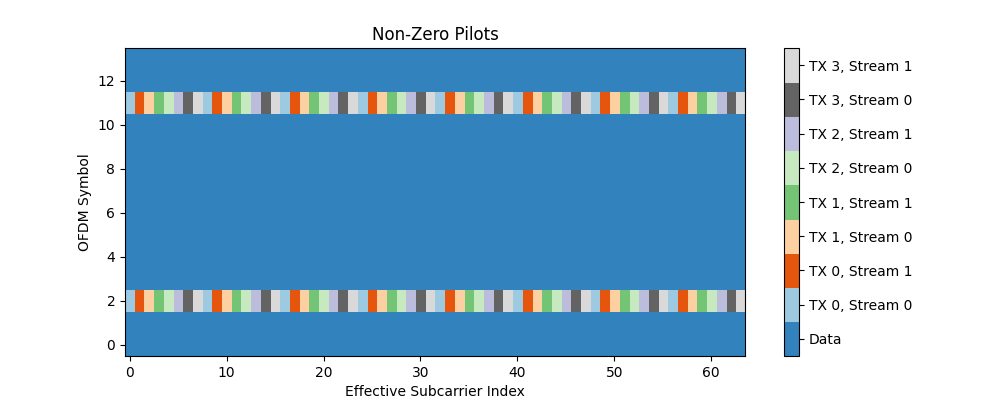
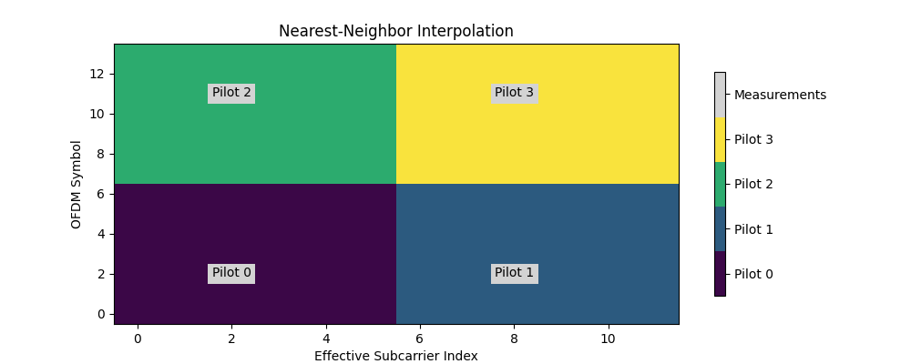

Orthogonal Frequency-Division Multiplexing (OFDM)
This module provides layers and functions to support
simulation of OFDM-based systems. The key component is the
ResourceGrid that defines how data and pilot symbols
are mapped onto a sequence of OFDM symbols with a given FFT size. The resource
grid can also define guard and DC carriers which are nulled. In 4G/5G parlance,
a ResourceGrid would be a slot.
Once a ResourceGrid is defined, one can use the
ResourceGridMapper to map a tensor of complex-valued
data symbols onto the resource grid, prior to OFDM modulation using the
OFDMModulator or further processing in the
frequency domain.
The PilotPattern allows for a fine-grained configuration
of how transmitters send pilots for each of their streams or antennas. As the
management of pilots in multi-cell MIMO setups can quickly become complicated,
the module provides the KroneckerPilotPattern class
that automatically generates orthogonal pilot transmissions for all transmitters
and streams.
Additionally, the module contains layers for channel estimation, precoding and equalization,
such as the LSChannelEstimator, the
ZFPrecoder, and the LMMSEEqualizer.
These are good starting points for the development of more advanced algorithms
and provide robust baselines for benchmarking.
Resource Grid
The following code snippet shows how to setup and visualize an instance of
ResourceGrid:
rg = ResourceGrid(num_ofdm_symbols = 14,
fft_size = 64,
subcarrier_spacing = 30e3,
num_tx = 1,
num_streams_per_tx = 1,
num_guard_carriers = [5, 6],
dc_null = True,
pilot_pattern = "kronecker",
pilot_ofdm_symbol_indices = [2, 11])
rg.show();
This code creates a resource grid consisting of 14 OFDM symbols with 64 subcarriers. The first five and last six subcarriers as well as the DC subcarriers are nulled. The second and eleventh OFDM symbol are reserved for pilot transmissions.
Subcarriers are numbered from \(0\) to \(N-1\), where \(N\) is the FTT size. The index \(0\) corresponds to the lowest frequency, which is \(-\frac{N}{2}\Delta_f\) (for \(N\) even) or \(-\frac{N-1}{2}\Delta_f\) (for \(N\) odd), where \(\Delta_f\) is the subcarrier spacing which is irrelevant for the resource grid. The index \(N-1\) corresponds to the highest frequency, which is \((\frac{N}{2}-1)\Delta_f\) (for \(N\) even) or \(\frac{N-1}{2}\Delta_f\) (for \(N\) odd).
ResourceGrid
- class sionna.ofdm.ResourceGrid(num_ofdm_symbols, fft_size, subcarrier_spacing, num_tx=1, num_streams_per_tx=1, cyclic_prefix_length=0, num_guard_carriers=(0, 0), dc_null=False, pilot_pattern=None, pilot_ofdm_symbol_indices=None, dtype=tf.complex64)[source]
Defines a ResourceGrid spanning multiple OFDM symbols and subcarriers.
- Parameters
num_ofdm_symbols (int) – Number of OFDM symbols.
fft_size (int) – FFT size (, i.e., the number of subcarriers).
subcarrier_spacing (float) – The subcarrier spacing in Hz.
num_tx (int) – Number of transmitters.
num_streams_per_tx (int) – Number of streams per transmitter.
cyclic_prefix_length (int) – Length of the cyclic prefix.
num_guard_carriers (int) – List of two integers defining the number of guardcarriers at the left and right side of the resource grid.
dc_null (bool) – Indicates if the DC carrier is nulled or not.
pilot_pattern (One of [None, "kronecker", "empty", PilotPattern]) – An instance of
PilotPattern, a string shorthand for theKroneckerPilotPatternorEmptyPilotPattern, or None. Defaults to None which is equivalent to “empty”.pilot_ofdm_symbol_indices (List, int) – List of indices of OFDM symbols reserved for pilot transmissions. Only needed if
pilot_pattern="kronecker". Defaults to None.dtype (tf.Dtype) – Defines the datatype for internal calculations and the output dtype. Defaults to tf.complex64.
- property bandwidth
fft_size*subcarrier_spacing.- Type
The occupied bandwidth [Hz]
- build_type_grid()[source]
Returns a tensor indicating the type of each resource element.
Resource elements can be one of
0 : Data symbol
1 : Pilot symbol
2 : Guard carrier symbol
3 : DC carrier symbol
- Output
[num_tx, num_streams_per_tx, num_ofdm_symbols, fft_size], tf.int32 – Tensor indicating for each transmitter and stream the type of the resource elements of the corresponding resource grid. The type can be one of [0,1,2,3] as explained above.
- property cyclic_prefix_length
Length of the cyclic prefix.
- property dc_ind
Index of the DC subcarrier.
If
fft_sizeis odd, the index is (fft_size-1)/2. Iffft_sizeis even, the index isfft_size/2.
- property dc_null
Indicates if the DC carriers is nulled or not.
- property effective_subcarrier_ind
Returns the indices of the effective subcarriers.
- property fft_size
The FFT size.
- property num_data_symbols
Number of resource elements used for data transmissions.
- property num_effective_subcarriers
Number of subcarriers used for data and pilot transmissions.
- property num_guard_carriers
Number of left and right guard carriers.
- property num_ofdm_symbols
The number of OFDM symbols of the resource grid.
- property num_pilot_symbols
Number of resource elements used for pilot symbols.
- property num_resource_elements
Number of resource elements.
- property num_streams_per_tx
Number of streams per transmitter.
- property num_time_samples
The number of time-domain samples occupied by the resource grid.
- property num_tx
Number of transmitters.
- property num_zero_symbols
Number of empty resource elements.
- property ofdm_symbol_duration
Duration of an OFDM symbol with cyclic prefix [s].
- property pilot_pattern
The used PilotPattern.
- show(tx_ind=0, tx_stream_ind=0)[source]
Visualizes the resource grid for a specific transmitter and antenna.
- Input
tx_ind (int) – Indicates the transmitter index.
tx_stream_ind (int) – Indicates the index of the stream.
- Output
matplotlib.figure – A handle to a matplot figure object.
- property subcarrier_spacing
The subcarrier spacing [Hz].
ResourceGridMapper
- class sionna.ofdm.ResourceGridMapper(resource_grid, dtype=tf.complex64, **kwargs)[source]
Maps a tensor of modulated data symbols to a ResourceGrid.
This layer takes as input a tensor of modulated data symbols and maps them together with pilot symbols onto an OFDM
ResourceGrid. The output can be converted to a time-domain signal with theModulatoror further processed in the frequency domain.- Parameters
resource_grid (ResourceGrid) – An instance of
ResourceGrid.dtype (tf.Dtype) – Datatype for internal calculations and the output dtype. Defaults to tf.complex64.
- Input
[batch_size, num_tx, num_streams_per_tx, num_data_symbols], tf.complex – The modulated data symbols to be mapped onto the resource grid.
- Output
[batch_size, num_tx, num_streams_per_tx, num_ofdm_symbols, fft_size], tf.complex – The full OFDM resource grid in the frequency domain.
ResourceGridDemapper
- class sionna.ofdm.ResourceGridDemapper(resource_grid, stream_management, dtype=tf.complex64, **kwargs)[source]
Extracts data-carrying resource elements from a resource grid.
This layer takes as input an OFDM
ResourceGridand extracts the data-carrying resource elements. In other words, it implements the reverse operation ofResourceGridMapper.- Parameters
resource_grid (ResourceGrid) – An instance of
ResourceGrid.stream_management (StreamManagement) – An instance of
StreamManagement.dtype (tf.Dtype) – Datatype for internal calculations and the output dtype. Defaults to tf.complex64.
- Input
[batch_size, num_rx, num_streams_per_rx, num_ofdm_symbols, fft_size, data_dim] – The full OFDM resource grid in the frequency domain. The last dimension data_dim is optional. If data_dim is used, it refers to the dimensionality of the data that should be demapped to individual streams. An example would be LLRs.
- Output
[batch_size, num_rx, num_streams_per_rx, num_data_symbols, data_dim] – The data that were mapped into the resource grid. The last dimension data_dim is only returned if it was used for the input.
RemoveNulledSubcarriers
- class sionna.ofdm.RemoveNulledSubcarriers(resource_grid, **kwargs)[source]
Removes nulled guard and/or DC subcarriers from a resource grid.
- Parameters
resource_grid (ResourceGrid) – An instance of
ResourceGrid.- Input
[batch_size, num_tx, num_streams_per_tx, num_ofdm_symbols, fft_size], tf.complex64 – Full resource grid.
- Output
[batch_size, num_tx, num_streams_per_tx, num_ofdm_symbols, num_effective_subcarriers], tf.complex64 – Resource grid without nulled subcarriers.
Modulation & Demodulation
OFDMModulator
- class sionna.ofdm.OFDMModulator(cyclic_prefix_length, **kwargs)[source]
Computes the time-domain representation of an OFDM resource grid with (optional) cyclic prefix.
- Parameters
cyclic_prefix_length (int) – Integer indicating the length of the cyclic prefix that it prepended to each OFDM symbol. It cannot be longer than the FFT size.
- Input
[…,num_ofdm_symbols,fft_size], tf.complex – A resource grid in the frequency domain.
- Output
[…,num_ofdm_symbols*(fft_size+cyclic_prefix_length)], tf.complex – Time-domain OFDM signal.
OFDMDemodulator
- class sionna.ofdm.OFDMDemodulator(fft_size, l_min, cyclic_prefix_length, **kwargs)[source]
Computes the frequency-domain representation of an OFDM waveform with cyclic prefix removal.
The demodulator assumes that the input sequence is generated by the
TimeChannel. For a single pair of antennas, the received signal sequence is given as:\[y_b = \sum_{\ell =L_\text{min}}^{L_\text{max}} \bar{h}_\ell x_{b-\ell} + w_b, \quad b \in[L_\text{min}, N_B+L_\text{max}-1]\]where \(\bar{h}_\ell\) are the discrete-time channel taps, \(x_{b}\) is the the transmitted signal, and \(w_\ell\) Gaussian noise.
Starting from the first symbol, the demodulator cuts the input sequence into pieces of size
cyclic_prefix_length + fft_size, and throws away any trailing symbols. For each piece, the cyclic prefix is removed and thefft_size-point discrete Fourier transform is computed.Since the input sequence starts at time \(L_\text{min}\), the FFT-window has a timing offset of \(L_\text{min}\) symbols, which leads to a subcarrier-dependent phase shift of \(e^{\frac{j2\pi k L_\text{min}}{N}}\), where \(k\) is the subcarrier index, \(N\) is the FFT size, and \(L_\text{min} \le 0\) is the largest negative time lag of the discrete-time channel impulse response. This phase shift is removed in this layer, by explicitly multiplying each subcarrier by \(e^{\frac{-j2\pi k L_\text{min}}{N}}\). This is a very important step to enable channel estimation with sparse pilot patterns that needs to interpolate the channel frequency response accross subcarriers. It also ensures that the channel frequency response seen by the time-domain channel is close to the
OFDMChannel.- Parameters
fft_size (int) – FFT size (, i.e., the number of subcarriers).
l_min (int) – The largest negative time lag of the discrete-time channel impulse response. It should be the same value as that used by the cir_to_time_channel function.
cyclic_prefix_length (int) – Integer indicating the length of the cyclic prefix that is prepended to each OFDM symbol.
- Input
[…,num_ofdm_symbols*(fft_size+cyclic_prefix_length)+n], tf.complex – Tensor containing the time-domain signal along the last dimension. n is a nonnegative integer.
- Output
[…,num_ofdm_symbols,fft_size], tf.complex – Tensor containing the OFDM resource grid along the last two dimension.
Pilot Pattern
A PilotPattern defines how transmitters send pilot
sequences for each of their antennas or streams over an OFDM resource grid.
It consists of two components,
a mask and pilots. The mask indicates which resource elements are
reserved for pilot transmissions by each transmitter and its respective
streams. In some cases, the number of streams is equal to the number of
transmit antennas, but this does not need to be the case, e.g., for precoded
transmissions. The pilots contains the pilot symbols that are transmitted
at the positions indicated by the mask. Separating a pilot pattern into
mask and pilots enables the implementation of a wide range of pilot
configurations, including trainable pilot sequences.
The following code snippet shows how to define a simple custom
PilotPattern for single transmitter, sending two streams
Note that num_effective_subcarriers is the number of subcarriers that
can be used for data or pilot transmissions. Due to guard
carriers or a nulled DC carrier, this number can be smaller than the
fft_size of the ResourceGrid.
num_tx = 1
num_streams_per_tx = 2
num_ofdm_symbols = 14
num_effective_subcarriers = 12
# Create a pilot mask
mask = np.zeros([num_tx,
num_streams_per_tx,
num_ofdm_symbols,
num_effective_subcarriers])
mask[0, :, [2,11], :] = 1
num_pilot_symbols = int(np.sum(mask[0,0]))
# Define pilot sequences
pilots = np.zeros([num_tx,
num_streams_per_tx,
num_pilot_symbols], np.complex64)
pilots[0, 0, 0:num_pilot_symbols:2] = (1+1j)/np.sqrt(2)
pilots[0, 1, 1:num_pilot_symbols:2] = (1+1j)/np.sqrt(2)
# Create a PilotPattern instance
pp = PilotPattern(mask, pilots)
# Visualize non-zero elements of the pilot sequence
pp.show(show_pilot_ind=True);
As shown in the figure above, the pilots are mapped onto the mask from the smallest effective subcarrier and OFDM symbol index to the highest effective subcarrier and OFDM symbol index. Here, boths stream have 24 pilot symbols, out of which only 12 are nonzero. It is important to keep this order of mapping in mind when designing more complex pilot sequences.
PilotPattern
- class sionna.ofdm.PilotPattern(mask, pilots, trainable=False, normalize=False, dtype=tf.complex64)[source]
Class defining a pilot pattern for an OFDM ResourceGrid.
This class defines a pilot pattern object that is used to configure an OFDM
ResourceGrid.- Parameters
mask ([num_tx, num_streams_per_tx, num_ofdm_symbols, num_effective_subcarriers], bool) – Tensor indicating resource elements that are reserved for pilot transmissions.
pilots ([num_tx, num_txt_ant, num_pilots], tf.complex) – The pilot symbols to be mapped onto the
mask.trainable (bool) – Indicates if
pilotsis a trainable Variable. Defaults to False.normalize (bool) – Indicates if the
pilotsshould be normalized to an average energy of one across the last dimension. This can be useful to ensure that trainablepilotshave a finite energy. Defaults to False.dtype (tf.Dtype) – Defines the datatype for internal calculations and the output dtype. Defaults to tf.complex64.
- property mask
The mask of the pilot pattern.
- property normalize
Indicates if the pilots are normalized or not.
- property num_data_symbols
Number of data symbols per transmit antenna.
- property num_effective_subcarriers
The number of effectvie subcarriers.
- property num_ofdm_symbols
The number of OFDM symbols.
- property num_pilot_symbols
Number of pilot symbols per transmit antenna.
- property num_streams_per_tx
The number of streams per transmitter.
- property num_tx
The number of transmitters.
- property pilots
Returns the possibly normalized tensor of pilot symbols.
- show(tx_ind=None, stream_ind=None, show_pilot_ind=False)[source]
Visualizes the non-zero pilots for some transmitters and streams.
The function only produces correct results for non-overlapping pilot sequences. In order to inspect overlapping sequences, one can simply call the function with different transmitter and stream indices.
- Input
tx_ind (list, int) – Indicates the indices of transmitters to be included. Defaults to None, i.e., all transmitters included.
stream_ind (list, int) – Indicates the indices of streams to be included. Defaults to None, i.e., all streams included.
show_pilot_ind (bool) – Indicates if the indices of the pilot symbols should be shhown.
- Output
matplotlib.figure.Figure – A handle to a matplot figure object.
EmptyPilotPattern
- class sionna.ofdm.EmptyPilotPattern(num_tx, num_streams_per_tx, num_ofdm_symbols, num_effective_subcarriers, dtype=tf.complex64)[source]
Creates an empty pilot pattern.
Generates a instance of
PilotPatternwith an emptymaskandpilots.- Parameters
num_tx (int) – Number of transmitters.
num_streams_per_tx (int) – Number of streams per transmitter.
num_ofdm_symbols (int) – Number of OFDM symbols.
num_effective_subcarriers (int) – Number of effective subcarriers that are available for the transmission of data and pilots. Note that this number is generally smaller than the
fft_sizedue to nulled subcarriers.dtype (tf.Dtype) – Defines the datatype for internal calculations and the output dtype. Defaults to tf.complex64.
KroneckerPilotPattern
- class sionna.ofdm.KroneckerPilotPattern(resource_grid, pilot_ofdm_symbol_indices, normalize=True, seed=0, dtype=tf.complex64)[source]
Simple orthogonal pilot pattern with Kronecker structure.
This function generates an instance of
PilotPatternthat allocates non-overlapping pilot sequences for all transmitters and streams on specified OFDM symbols. As the same pilot sequences are reused across those OFDM symbols, the resulting pilot pattern has a frequency-time Kronecker structure. This structure enables a very efficient implementation of the LMMSE channel estimator. Each pilot sequence is constructed from randomly drawn QPSK constellation points.- Parameters
resource_grid (ResourceGrid) – An instance of a
ResourceGrid.pilot_ofdm_symbol_indices (list, int) – List of integers defining the OFDM symbol indices that are reserved for pilots.
normalize (bool) – Indicates if the
pilotsshould be normalized to an average energy of one across the last dimension. Defaults to True.seed (int) – Seed for the generation of the pilot sequence. Different seed values lead to different sequences. Defaults to 0.
dtype (tf.Dtype) – Defines the datatype for internal calculations and the output dtype. Defaults to tf.complex64.
Note
It is required that the
resource_grid’s propertynum_effective_subcarriersis an integer multiple ofnum_tx * num_streams_per_tx. This condition is required to ensure that all transmitters and transmit antennas get non-overlapping pilot sequences. For a large number of antennas and/or transmitters, the pilot pattern becomes very sparse in the frequency domain.Examples
>>> rg = ResourceGrid(num_ofdm_symbols=14, ... fft_size=64, ... subcarrier_spacing = 30e3, ... num_tx=4, ... num_streams_per_tx=2, ... pilot_pattern = "kronecker", ... pilot_ofdm_symbol_indices = [2, 11]) >>> rg.pilot_pattern.show();
Channel Estimation
LSChannelEstimator
- class sionna.ofdm.LSChannelEstimator(resource_grid, interpolation_type='nn', dtype=tf.complex64, **kwargs)[source]
Layer implementing least-squares (LS) channel estimation for OFDM MIMO systems.
After LS channel estimation at the pilot positions, the channel estimates and error variances are interpolated accross the entire resource grid using a specified interpolation function.
For simplicity, we describe the underlying algorithm for a vectorized observation, where we have a nonzero pilot for all elements to be estimated. The actually implementation works on a full OFDM resource grid with sparse pilot patterns. We consider the following model:
\[\mathbf{y} = \mathbf{h}\odot\mathbf{p} + \mathbf{n}\]where \(\mathbf{y}\in\mathbb{C}^{M}\) is the received signal vector, \(\mathbf{p}\in\mathbb{C}^M\) is the vector of pilot symbols, \(\mathbf{H}\in\mathbb{C}^{M}\) is the channel vector to be estimated, and \(\mathbf{n}\in\mathbb{C}^M\) is a zero-mean noise vector whose elements have variance \(N_0\). The operator \(\odot\) denotes element-wise multiplication.
The channel estimate \(\hat{\mathbf{h}}\) and error variances \(\sigma^2_i\), \(i=0,\dots,M-1\), are computed as
\[\begin{split}\hat{\mathbf{h}} &= \mathbf{y} \odot \frac{\mathbf{p}^\star}{\left|\mathbf{p}\right|^2} = \mathbf{h} + \tilde{\mathbf{h}}\\ \sigma^2_i &= \mathbb{E}\left[\tilde{h}_i \tilde{h}_i^\star \right] = \frac{N_0}{\left|p_i\right|^2}.\end{split}\]The channel estimates and error variances are then interpolated accross the entire resource grid.
- Parameters
resource_grid (ResourceGrid) – An instance of
ResourceGrid.interpolation_type (One of ["nn", "lin", "lin_time_avg"], string) – The interpolation to be used. Currently only the
NearestNeighborInterpolator(“nn”) andLinearInterpolatorwithout (“lin”) and with averaging across OFDM symbols (“lin_time_avg”) are supported.dtype (tf.Dtype) – Datatype for internal calculations and the output dtype. Defaults to tf.complex64.
- Input
(y, no) – Tuple:
y ([batch_size, num_rx, num_rx_ant, num_ofdm_symbols,fft_size], tf.complex) – The observed signals.
no ([batch_size, num_rx, num_rx_ant] or only the first n>=0 dims, tf.float) – The variance of the AWGN.
- Output
h_ls ([batch_size, num_rx, num_rx_ant, num_tx, num_streams_per_tx, num_ofdm_symbols,fft_size], tf.complex) – The channel estimates accross the entire resource grid for all transmitters and streams.
err_var (Same shape as
h_ls, tf.float) – The channel estimation error variance accross the entire resource grid for all transmitters and streams.
NearestNeighborInterpolator
- class sionna.ofdm.NearestNeighborInterpolator(pilot_pattern)[source]
Nearest-neighbor channel estimate interpolation on a resource grid.
This class assigns to each element of an OFDM resource grid one of
num_pilotsprovided measurements, e.g., channel estimates or error variances, according to the nearest neighbor method. It is assumed that the measurements were taken at the nonzero positions of aPilotPattern.The figure below shows how four channel estimates are interpolated accross a resource grid. Grey fields indicate measurement positions while the colored regions show which resource elements are assigned to the same measurement value.
- Parameters
pilot_pattern (PilotPattern) – An instance of
PilotPattern.- Input
[k, l ,m, num_tx, num_streams_per_tx, num_pilot_symbols], tf.DType – Tensor of quantities to be interpolated according to a
PilotPattern. This can be channel estimates as well as the related error variances.- Output
[k, l, m, num_tx, num_streams_per_tx, num_ofdm_symbols, num_effective_subcarriers], tf.complex – The interpolated input tensor.
LinearInterpolator
- class sionna.ofdm.LinearInterpolator(pilot_pattern, time_avg=False)[source]
Linear channel estimate interpolation on a resource grid.
This class computes for each element of an OFDM resource grid a channel estimate based on
num_pilotsprovided measurements, e.g., channel estimates or error variances, through linear interpolation. It is assumed that the measurements were taken at the nonzero positions of aPilotPattern.The interpolation is done first across sub-carriers and then across OFDM symbols.
- Parameters
pilot_pattern (PilotPattern) – An instance of
PilotPattern.time_avg (bool) – If enabled, measurements will be averaged across OFDM symbols (i.e., time). This is useful for channels that do not vary substantially over the duration of an OFDM frame. Defaults to False.
- Input
[k, l ,m, num_tx, num_streams_per_tx, num_pilot_symbols], tf.DType – Tensor of quantities to be interpolated according to a
PilotPattern. This can be channel estimates as well as the related error variances.- Output
[k, l, m, num_tx, num_streams_per_tx, num_ofdm_symbols, num_effective_subcarriers], tf.complex – The interpolated input tensor.
Precoding
ZFPrecoder
- class sionna.ofdm.ZFPrecoder(resource_grid, stream_management, return_effective_channel=False, dtype=tf.complex64, **kwargs)[source]
Zero-forcing precoding for multi-antenna transmissions.
This layer precodes a tensor containing OFDM resource grids using the
zero_forcing_precoder(). For every transmitter, the channels to all intended receivers are gathered into a channel matrix, based on the which the precoding matrix is computed and the input tensor is precoded. The layer also outputs optionally the effective channel after precoding for each stream.- Parameters
resource_grid (ResourceGrid) – An instance of
ResourceGrid.stream_management (StreamManagement) – An instance of
StreamManagement.return_effective_channel (bool) – Indicates if the effective channel after precoding should be returned.
dtype (tf.Dtype) – Datatype for internal calculations and the output dtype. Defaults to tf.complex64.
- Input
(x, h) – Tuple:
x ([batch_size, num_tx, num_streams_per_tx, num_ofdm_symbols, fft_size], tf.complex) – Tensor containing the resource grid to be precoded.
h ([batch_size, num_rx, num_rx_ant, num_tx, num_tx_ant, num_ofdm, fft_size], tf.complex) – Tensor containing the channel knowledge based on which the precoding is computed.
- Output
x_precoded ([batch_size, num_tx, num_tx_ant, num_ofdm_symbols, fft_size], tf.complex) – The precoded resource grids.
h_eff ([batch_size, num_rx, num_rx_ant, num_tx, num_streams_per_tx, num_ofdm, num_effective_subcarriers], tf.complex) – Only returned if
return_effective_channel=True. The effectice channels for all streams after precoding. Can be used to simulate perfect channel state information (CSI) at the receivers. Nulled subcarriers are automatically removed to be compliant with the behavior of a channel estimator.
Note
If you want to use this layer in Graph mode with XLA, i.e., within a function that is decorated with
@tf.function(jit_compile=True), you must setsionna.Config.xla_compat=true. Seexla_compat.
Equalization
LMMSEEqualizer
- class sionna.ofdm.LMMSEEqualizer(resource_grid, stream_management, whiten_interference=True, dtype=tf.complex64, **kwargs)[source]
LMMSE equalization for OFDM MIMO transmissions.
This layer computes linear minimum mean squared error (LMMSE) estimation for OFDM MIMO transmissions. The OFDM and stream configuration are provided by a
ResourceGridandStreamManagementinstance, respectively. The detection algorithm is thelmmse_equalizer(). The layer computes soft-symbol estimates together with effective noise variances for all streams which can, e.g., be used by aDemapperto obtain LLRs.- Parameters
resource_grid (ResourceGrid) – An instance of
ResourceGrid.stream_management (StreamManagement) – An instance of
StreamManagement.whiten_interference (bool) – If True (default), the interference is first whitened before equalization. In this case, an alternative expression for the receive filter is used which can be numerically more stable.
dtype (tf.Dtype) – Datatype for internal calculations and the output dtype. Defaults to tf.complex64.
- Input
(y, h_hat, err_var, no) – Tuple:
y ([batch_size, num_rx, num_rx_ant, num_ofdm_symbols, fft_size], tf.complex) – The received OFDM resource grid after cyclic prefix removal and FFT.
h_hat ([batch_size, num_rx, num_rx_ant, num_tx, num_streams_per_tx, num_ofdm_symbols, num_effective_subcarriers], tf.complex) – The channel estimates for all streams from all transmitters.
err_var ([Broadcastable to shape of
h_hat], tf.float) – The variance of the channel estimation error.no ([batch_size, num_rx, num_rx_ant] (or only the first n dims), tf.float) – The variance of the AWGN noise.
- Output
x_hat ([batch_size, num_tx, num_streams, num_data_symbols], tf.complex) – The estimated symbols.
no_eff ([batch_size, num_tx, num_streams, num_data_symbols], tf.float) – The effective noise variance for each estimated symbol.
Note
If you want to use this layer in Graph mode with XLA, i.e., within a function that is decorated with
@tf.function(jit_compile=True), you must setsionna.Config.xla_compat=true. Seexla_compat.
Detection
MaximumLikelihoodDetector
- class sionna.ofdm.MaximumLikelihoodDetector(output, demapping_method, resource_grid, stream_management, constellation_type=None, num_bits_per_symbol=None, constellation=None, hard_out=False, dtype=tf.complex64, **kwargs)[source]
Maximum-likelihood (ML) detection for OFDM MIMO transmissions.
This layer implements maximum-likelihood (ML) detection for OFDM MIMO transmissions. Both ML detection of symbols or bits with either soft- or hard-decisions are supported. The OFDM and stream configuration are provided by a
ResourceGridandStreamManagementinstance, respectively. The actual detector is an instance ofMaximumLikelihoodDetector.- Parameters
output (One of ["bit", "symbol"], str) – The type of output, either LLRs on bits or logits on constellation symbols.
demapping_method (One of ["app", "maxlog"], str) – The demapping method used.
resource_grid (ResourceGrid) – An instance of
ResourceGrid.stream_management (StreamManagement) – An instance of
StreamManagement.constellation_type (One of ["qam", "pam", "custom"], str) – For “custom”, an instance of
Constellationmust be provided.num_bits_per_symbol (int) – The number of bits per constellation symbol, e.g., 4 for QAM16. Only required for
constellation_typein [“qam”, “pam”].constellation (Constellation) – An instance of
Constellationor None. In the latter case,constellation_typeandnum_bits_per_symbolmust be provided.hard_out (bool) – If True, the detector computes hard-decided bit values or constellation point indices instead of soft-values. Defaults to False.
dtype (One of [tf.complex64, tf.complex128] tf.DType (dtype)) – The dtype of y. Defaults to tf.complex64. The output dtype is the corresponding real dtype (tf.float32 or tf.float64).
- Input
(y, h_hat, err_var, no) – Tuple:
y ([batch_size, num_rx, num_rx_ant, num_ofdm_symbols, fft_size], tf.complex) – The received OFDM resource grid after cyclic prefix removal and FFT.
h_hat ([batch_size, num_rx, num_rx_ant, num_tx, num_streams_per_tx, num_ofdm_symbols, num_effective_subcarriers], tf.complex) – The channel estimates for all streams from all transmitters.
err_var ([Broadcastable to shape of
h_hat], tf.float) – The variance of the channel estimation error.no ([batch_size, num_rx, num_rx_ant] (or only the first n dims), tf.float) – The variance of the AWGN noise.
- Output
One of
[batch_size, num_tx, num_streams, num_data_symbols*num_bits_per_symbol], tf.float – LLRs or hard-decisions for every bit of every stream, if
outputequals “bit”.[batch_size, num_tx, num_streams, num_data_symbols, num_points], tf.float or [batch_size, num_tx, num_streams, num_data_symbols], tf.int – Logits or hard-decisions on constellation symbols for every stream, if
outputequals “symbol”. Hard-decisions correspond to the symbol indices.
Note
If you want to use this layer in Graph mode with XLA, i.e., within a function that is decorated with
@tf.function(jit_compile=True), you must setsionna.Config.xla_compat=true. Seexla_compat.